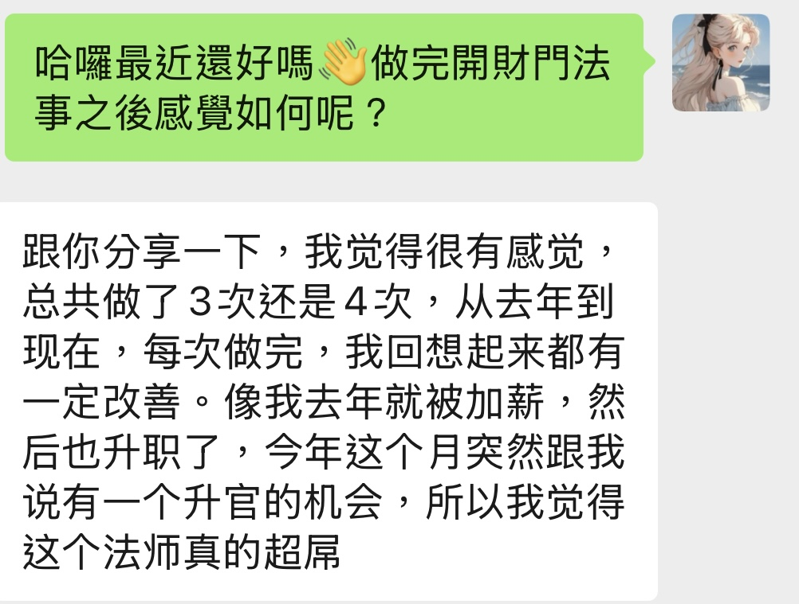

明明已經很努力了，事業卻好像一直啟動不了？
感覺財路被什麼東西卡住了，就是找不到原因？
好不容易賺到的錢，卻總是莫名其妙就消失了？
感情、工作、家庭，好幾件事同時卡住，完全不知道要從哪裡開始？
透過玄天上帝法壇問事與炁絡筆能量校準，問事過程中神明會點出妳未曾提及的隱情。妳給的問題越具體，得到的解決方案就越精準。
問事最重要的前提是：妳給的問題越具體，神明給出的解決方案就越精準。如果是財運問題，就告訴我具體卡在哪裡；如果是感情問題，說清楚是什麼狀況。
問事過程中，有時神明會自然點出妳沒有說過的細節——可能是妳的職業性質、家庭狀況，或是那件妳以為不重要、根本沒提到的事。這不是每次問事都一定會發生，但確實在很多個案例裡出現過。下面的見證和案例可以讓妳自己判斷。
炁絡筆是道教正一教傳承的法術與法器。它的用法跟水晶靈擺有點類似，但最大的不同在於：這支筆在祭煉過程中，是透過變神法請玄天上帝親自來祭煉的 (因為凡胎肉體無祭煉權限)。我的法壇主神就是玄天上帝，所以問事得到的答案，是來自祂的視角。
透過炁絡筆，可以把妳的財運指數具體數字化（0–100），讓能量狀態有個清楚的數字，不用靠感覺猜。
開財門之前，得先確認有沒有無形眾生、冤親債主在擋著討債。如果有人在門口守著，門開了、錢進來了，最後還是會被帶走。先查清楚狀況，才是真正打通財路的正確順序。
以下是一位真實客戶分享她來做問事的經歷。
這位客戶的工作是一年一聘制，她想問：今年能不能順利續約？如果沒有續約，能不能找到條件差不多甚至更好的工作？
問事結果是：很難。因為她現在這份工作集合了她非常看重的幾個條件——工作性質自由、薪水高、可以居家辦公。要同時找到這幾個條件的工作，本來就不容易。
問事過程中，Luna 直接問她：『妳現在是可以居家辦公，對不對？』她當場嚇到：『對，你怎麼知道？』她從來沒有告訴過 Luna 這件事，但這正是她選擇這份工作最重要的條件之一。
她問有什麼辦法可以增加收入，玄天上帝直接指出：她的野心不夠大。她覺得一個月賺十萬已經很多了，所以就只能賺到十萬左右，沒有辦法往更高走。不是能力問題，是心態設定的上限問題。
「上個月請老師幫我開財門問事，老師一開始說我是不是在家裡工作，因為我的主業現在是 work from home。我一開始聽到還覺得這很基本，後來仔細想想才發現我根本沒有跟老師提過這件事。」
「我又問有什麼方法可以增加收入，老師竟然精準地道出『十萬已經很多』。沒想到玄天上帝直接點出，這就是沒有辦法賺大錢的原因。」
以下案例均以匿名方式呈現。案例中所有被驗證的細節，都是問事進行中由神明視角揭示，客戶事前未曾主動告知。
有一個客戶來找我，說她想開財門，覺得自己財運一直很差，錢賺不進來，賺進來也留不住。
問事的時候，神明直接告訴我：她這個財門要開，得先處理嬰靈的問題。
我就直接問她：「妳是不是有拿過小孩？」
她愣了一下，承認了。總共三次。她說她之前有去辦過超渡，以為處理好了。
我幫她逐一請示神明，結果發現三次裡面只有一次超渡成功，另外兩個從來沒有離開過——一男一女，一直都在。而且其中一個怨氣非常重，已經到了要向她索命的程度。
這就是為什麼她事業一直起不來，錢莫名消失，整個人生都卡住、喘不過氣。
後來我們請道長來協助處理超渡法事，跟那兩個靈體談判，把索命的狀況化解掉。處理完之後，她的財路才真正打開。
有一個客戶來找我問財運，說自己做什麼事都卡卡的，想知道問題出在哪裡。問事的時候，我習慣會先確認有沒有冤親債主或無形眾生勾角的問題。一問，發現有。我繼續細問，神明說是她母親的問題。
我不知道她母親是否已經往生，就繼續請示：「她母親要傳達什麼？」
就在那一刻，她母親的靈體直接透過我表達情緒，我當場開始哭。哭完之後，我感受到的訊息是：「為什麼我的孩子都不來祭拜我？為什麼不來給我供品？」
我問她：「妳的母親是已經往生了嗎？她在找妳。」
她嚇到了。她說她母親往生很久了，她們從小就分開，不親也不熟。母親剛往生的時候她有去祭拜過一次，之後就沒有再去了。她完全不知道母親一直都跟在她身邊。
後來我幫她跟母親的靈體溝通，告訴她母親：她已經知道這件事了，之後會去祭拜、準備供品，請先不要勾攪她的財路，讓她先有能力賺到錢，我們才能繼續往下處理。
母親答應了，財門才順利打開。
有一個客戶來找我，她老公外面有小三，而且已經提出要離婚。她很痛苦，想知道接下來該怎麼辦。
問事的過程中，我察覺到她身上有被下泰國方面的法術。我跟她描述我看到的法術元素：一個土色的甕，外面纏著土黃色的麻繩。她當場嚇到了。
因為她之前曾經偷看過她老公的手機，發現老公跟一個泰國降頭師在聯絡。降頭師做完法事之後有傳反饋照片給她老公，照片裡的東西，就是那個甕跟麻繩，跟我描述的完全一樣。這件事她完全沒有告訴我。
她後來也把那個小三的照片給我看。我一看，那個小三背後跟著兩個小鬼，整個人已經被奪舍了——眼神渙散，神智不清的狀態。這就是長期被小鬼附著、被奪取神智的結果。
那個降頭的目的有兩個：一個是讓她老公神智混亂、愛上那個小三；另一個是針對這個客戶的，讓她在離婚談判的時候不敢開口要賠償。
我告訴她：「如果妳堅持要追賠償，對方會繼續用更重的法術對付妳，嚴重的話可能會索妳的命。」
她考慮之後，選擇放手。賠償一毛都沒拿到，但她平安走出來了。命留住了，這才是最重要的。
有一個客戶，有一個朋友欠了他一大筆錢，拖了很久沒還，而且那個人還在國外，完全不知道怎麼處理。
問事的時候，我去讀了那個欠債人的狀態：他其實有想還，但就是會一直拖、一直找藉口。
問事完之後，我幫他做了開財門的調整，同時也透過法術施加在那個欠債人身上，讓對方還款的意願跟行動力提升。
大概過了一個月左右，那個朋友主動聯繫他，還了一大筆錢——金額比他原本預期能拿回來的還要多。他後來拿著那筆錢，回來報名了我的課程。
開財門的法術不只用來打通自己的財路，也可以用來催債。

有一個客戶，她的財運指數一開始測出來是 75 分，算是普通，但她覺得工作上一直沒有突破。
我們陸續做了幾次能量調整，讓她每個月的財運指數都維持在 100 分。
調整之後的那段時間，她工作上連續出現三個好消息：升職、薪資調整、還有一個意料之外的升官機會，在同一段時間內先後發生。
如果有冤親債主或無形眾生在勾角，祂們會一直透過財務這條路來提醒妳——這筆債，還沒還。門開了、錢進來了，祂們還是會讓妳把錢花出去。這個問題不解決，財門開了也是白開。
* 若發現狀況，會先嘗試談判暫緩干擾。若情況嚴重，Luna 會邀請合作道長協助主持超渡或解冤法事（費用視情況另計）。
問題越具體，神明給出的解決方案越精準，我們對目標的共識也會越清楚。例如：「我要怎麼樣達成月收入五十萬？」就比「我要怎麼讓收入增加」來得更具體，因為它有一個明確的線型目標可以去做調整。感情議題也一樣，給出具體的狀況，才能得到具體的答案。影片問事的話，前情提要必須非常清楚，包含目標與問題。
有時候客戶來問投資，結果神明一查發現妳根本沒在投資；或者心態保守不敢投資，卻想問哪個高風險項目適合自己，這就變成投機取巧了。神明會直接點出：妳需要先去學習，不學的話去做就是投機。這些心態與現狀的盲點，在問事時都會無所遁形。
另外有一點想先說清楚：很多人做完財運調整，第一個念頭是「那我是不是快要中樂透了？」
橫財這件事，其實是由福報換來的，不是這個服務主要能幫到妳的方向。我們這邊偏向的是正財跟偏財——正職穩定的話，升職加薪是有機會的；如果妳是業績制、有副業，要怎麼提升業績和收入，這些都是可以具體問的，神明會給出很實際的方向。
問事會同時進行兩件事：
第一，優先診斷有沒有無形力量勾角——冤親債主、嬰靈、家神、外靈等。這個優先級高於其他問題，因為無形的阻礙不解決，財門開了也沒用，錢進來還是會被帶走。
第二，針對你提出的具體問題，神明給出符合你現狀的解決方案與心態分析——有時在不知道你產業背景的情況下，也能點出精準的改變方向。
請示玄天上帝後，以炁絡筆將你的財運指數數字化（0–100）。指數決定後續是否需要開財門，以及法術介入的強度。
依診斷結果，直接進行開財門法術，或先處理冤親債主、無形問題，再討論後續執行方向。視訊連線約 20 分鐘，或影片問事均可。
先診斷清楚，看有沒有人在擋著妳的門，再開門引財。
這才是真正守得住錢的正確順序。